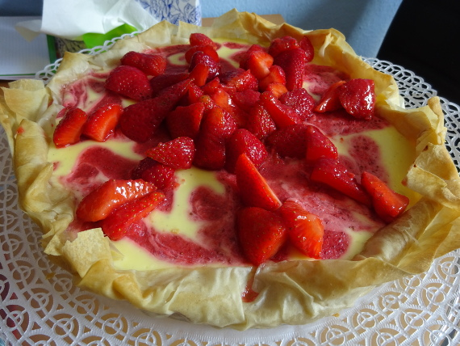

Knusper-Cheesecake

- Zubereitung: ca. 20 Minuten
- Backen: ca. 30 Minuten
- Für 1 Tarteform mit 30 cm Durchmesser
Zutaten
- 50 g Butter
- 1 Packung Filo- oder Strudelteig, 250 g
- 500 g Erdbeeren
- Saft von einer Zitrone
- 265 g Doppelrahm-Frischkäse
- Mark einer Vanilleschote
- 200 g Schmand
- 2 Eier, Größe M
- 80 g Zucker
- 2 EL Speisestärke
- Puderzucker
Zubereitung
- Die Butter zerlassen. 1 Filoteigblatt mit etwas Butter bepinseln und in die mit Backpapier ausgelegte oder gefettete Form legen. Rand locker überstehen lassen. Das nächste Blatt mit Butter bepinseln, in die Form legen. So fortfahren, bis alle Blätter
verbraucht sind. Teigränder locker eindrehen. Blätter kalt stellen.
- Den Backofen auf 180° Celsius (Umluft: 160° Celsisus) vorheizen. Die Erdbeeren waschen, putzen. Zwei Drittel vierteln, mit 1 EL Zitronensaft vermischen. Die übrigen Erdbeeren pürieren, vom Püree 2 EL unter die Erdbeeren mischen. Für die Käsemasse
Frischkäse, Vanillemark, Schmand, Eier, Zucker, Stärke und übrigen Zitronensaft verrühren. Die Creme in die Form gießen. Die Teigränder etwas einschlagen. Übriges Erdbeerpüree darauf verteilen, leicht marmorierend einrühren. Im unteren Backofendrittel
10 Minuten backen. Die Temperatur auf 150° Celsius (Umluft: 130° Celsius) reduzieren, weitere 20 Minuten backen.
- Kuchen etwas abkühlen lassen, aus der Form lösen. Den Rand mit Puderzucker bestäuben. Mit den restlichen Erdbeeren garnieren.